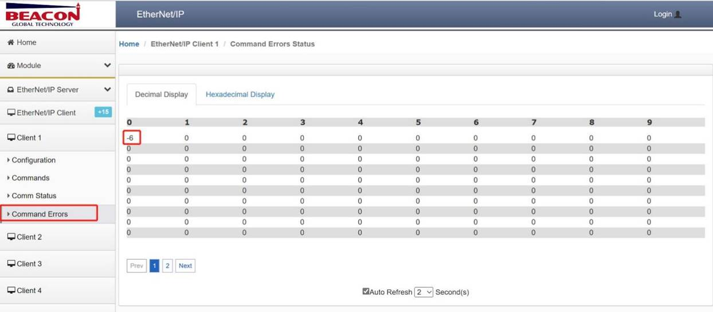

EtherNet/IP协议错误诊断
错误代码
在模块EtherNet/IP协议端口做Client（主站）时，用户可以在模块页面查看通讯状态以及命令错误代码，从而快速了解问题所在。


相关错误代码明细如下：
| 代码 | 代码（16进制） | 描述 |
|---|---|---|
| 1 | 0x01 |
连接失败 |
| 2 | 0x02 | 资源不可用 |
| 4 | 0x04 | 路径错误 |
| 5 | 0x05 | 未知对象路径 |
| 7 | 0x07 | 连接丢失 |
| 8 | 0x08 | 服务不支持 |
| 9 | 0x09 | 属性值非法 |
| 11 | 0x0B | 输入请求状态错误 |
| 12 | 0x0C | 对象状态冲突 |
| 14 | 0x0E | 属性只读 |
| 15 | 0x0F | 违反私有属性 |
| 16 | 0x10 | 设备状态冲突 |
| 17 | 0x11 | 应答数据过大 |
| 19 | 0x13 | 数据不完整 |
| 20 | 0x14 | 属性不支持 |
| 21 | 0x15 | 数据过多 |
| 22 | 0x16 | 对象不存在 |
| 24 | 0x18 | 属性数据不存在 |
| 25 | 0x19 | 存储失败 |
| 31 | 0x1F | 指定供应商 |
| 32 | 0x20 | 非法服务参数 |
| 255 | 0xFF | 数据地址非法 |
| -2 | 0xFFFE | 命令超时 |
| -3 | 0xFFFD | 目标连接失败 |
| -4 | 1xFFFC | 目标注册超时 |
| -5 | 2xFFFB | 建立连接超时 |
| -6 | 3xFFFA | 无TCP/IP连接(网线断开) |
| -10 | 0xFFF6 | 缺少参数 |
| -11 | 0xFFF5 | 功能不支持 |
| -20 | 0xFFEC | 应答数据包长度错误 |
| -21 | 0xFFEB | CPF数据项错误 |
| -22 | 0xFFEA | CPF数据地址错误 |
| -23 | 0xFFE9 | CPF数据类型错误 |
| -24 | 0xFFE8 | CPF命令码错误 |
| -25 | 0xFFE7 | CPF状态错误 |
| -26 | 0xFFE6 | CPF连接ID错误 |
| -27 | 0xFFE5 | 数据域上下文不匹配 |
| -28 | 0xFFE4 | 会话处理错误 |
| -29 | 0xFFE3 | CPF消息号不匹配 |
| -30 | 0xFFE2 | 会话数据长度错误 |
| -31 | 0xFFE1 | 会话数据状态错误 |
| -32 | 0xFFE0 | 会话版本错误 |
| -35 | 0xFFDD | FOPEN消息长度不符合 |
| -36 | 0xFFDC | FOPEN状态错误 |
| -41 | 0xFFD7 | PCCC消息长度不符 |
| -42 | 0xFFD6 | PCCC消息状态错误 |
| -43 | 0xFFD5 | PCCC命令错误 |
| -44 | 0xFFD4 | PCCC消息TNS不匹配 |
| -45 | 0xFFD3 | PCCC供应商ID不匹配 |
| -46 | 0xFFD2 | PCCC序列号不匹配 |
| 8455 | 0x2107 | 读取数据类型不正确 |